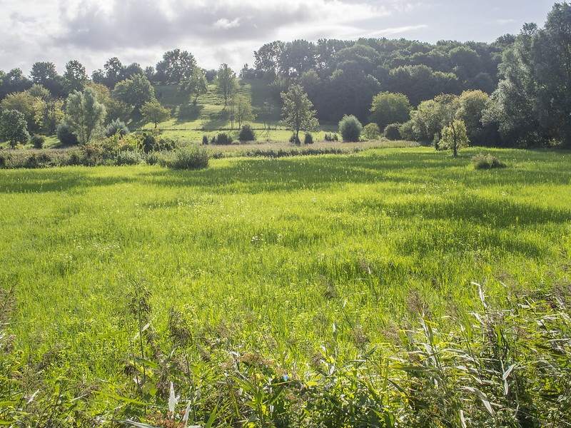

Pellynator lives on a pastel planet in the midst of the further milky way. The grass is soft so she prefers to sleep on them. she sleeps under her favorite Scabosia, and wears a night gown made out of the petals of a gentian. she is feeling rather curious today, and ponders on what she might do now that the day has just begun. her body feels sore but her legs feel enlightened
